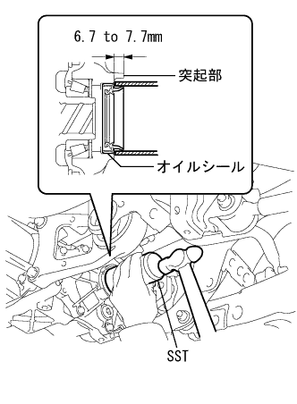
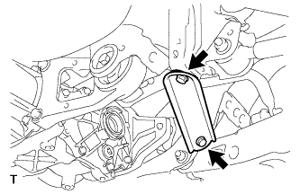
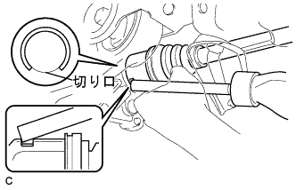
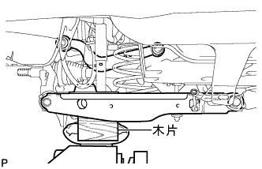
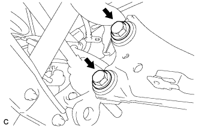
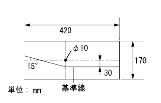

Rear Differential Side Gear Shaft Oil Seal (4WD) Installation |
| 1. Install Rear Differential Side Gear Shaft Oil Seal |
 |
Using SST and a hammer, tap a new side gear shaft oil seal into the differential carrier assembly to the standard depth.
Apply a light coat of MP grease No.2 to the oil seal lip.
| 2. Install Rear Suspension Member Brace LH |
 |
Install the rear suspension member brace LH with the 2 bolts.
| 3. Install Rear Drive Shaft Inboard Joint Snap Ring LH |
Install a new snap ring.
| 4. Install Rear Drive Shaft Assembly LH |
 |
Face the snap ring opening downward.
Align the splines of the inboard joint assembly, and using a brass bar and hammer, tap in the drive shaft assembly evenly.
| 5. Install Rear Axle Carrier LH |
 |
With a block of wood in between, jack up the rear suspension arm assembly No.2 until it is horizontal, and hold the rear axle carrier.
 |
Install the rear axle carrier to the upper control arm assembly rear LH, and temporarily tighten the bolt and nut.
| 6. Temporarily Tighten Rear Suspension Arm Assembly NO.2 LH |
 |
Install the rear suspension arm assembly No.2 LH to the rear axle carrier, and temporarily tighten the bolt and nut.
| 7. Install Trailing Arm Assembly Rear LH |
 |
Install the trailing arm assembly rear to the rear axle carrier with the 2 bolts.
| 8. Temporarily Tighten Rear Suspension Arm Assembly NO.1 LH |
 |
Insert the stud of the rear suspension arm assembly No.1 LH into the rear axle carrier, and temporarily tighten it with the nut.
 |
Install the rear suspension arm assembly No.1 LH to the rear suspension member, and temporarily tighten it with the bolt and nut.
|
Fully tighten the nut of the rear suspension arm assembly No.1 LH.
| 9. Install Height Control Sensor Sub-assembly Rear (w/ Discharge Headlight) |
 |
Install the height control sensor assembly (rear) with the 2 bolts.
 |
Connect the connector and engage the clamp.
| 10. Stabilize Suspension |
Lower the vehicle and bounce it up and down several times to stabilize the suspension.
| 11. Fully Tighten Upper Control Arm Assembly Rear LH |
 |
With a block of wood in between, jack up the rear suspension arm assembly No.2 LH to the standard vehicle height condition as shown in the illustration to apply load to the rear suspension.
 |
Tighten the upper control arm assembly rear LH with the 2 bolts and 2 nuts.
| 12. Fully Tighten Rear Suspension Arm Assembly NO.2 LH |
|
Fully tighten the installation bolt of the rear suspension arm assembly No.2 LH.
| 13. Fully Tighten Rear Suspension Arm Assembly NO.1 LH |
|
Fully tighten the bolt of the rear suspension arm assembly No.1 LH (rear suspension member side).
| 14. Install Rear Axle Hub & Bearing Assembly LH |
 |
Install the rear axle hub & bearing assembly LH to the rear axle carrier with the 4 bolts.
| 15. Install Rear Disc LH |
 |
) Align the matchmarks on the disc and axle hub, and install the disc.
| 16. Install Rear Disc Brake Caliper Assembly LH |
 |
Install the rear disc brake caliper assembly LH with the 2 bolts.
| 17. Connect Parking Brake Cable Assembly NO.3 |
 |
Install the parking brake cable assembly NO.3 with the 2 bolts.
| 18. Install Parking Brake Lever Protector |
 |
Install the parking brake lever protector to the parking brake cable assembly No.3.
| 19. Install Speed Sensor Rear LH |
 |
Install the clamp.
 |
Install the speed sensor rear LH with the bolt.
| 20. Install Rear Axle Shaft Nut LH |
 |
Using a chisel and hammer, stake the rear axle shaft nut.
| 21. Add Differential Oil |
Using a socket hexagon wrench 10mm, remove the rear differential filler plug and gasket.
Add Hypoid Gear Oil SX.
Check the oil level.
Using a socket hexagon wrench 10mm, tighten the rear differential filler plug with a new gasket.
| 22. Inspect Differential Oil |
 |
Using a socket hexagon wrench 10mm, remove the rear differential filler plug and gasket.
 |
Check that the oil level is within 0 to 5mm of the bottom edge of the rear differential filler plug hole.
If the oil level is low, check for oil leaks, then add oil.
Using a socket hexagon wrench 10mm, tighten the rear differential filler plug with a new gasket.
| 23. Install Exhaust Pipe Assembly Center |
 |
Compression Spring Inspection
Using a vernier caliper, measure the free length of the compression spring.
 |
Gasket Installation
Insert a new gasket into the exhaust center pipe assembly as far as it will go by hand.
Install a new gasket to the exhaust pipe assembly front.
Install the exhaust center pipe assembly with the 3 exhaust pipe supports.
 |
Install the exhaust center pipe assembly to the exhaust pipe assembly front with the 2 bolts.
 |
Install the exhaust center pipe assembly to the exhaust tail pipe assembly with the bolts and 2 compression springs.
| 24. Install Rear Tire |
| 25. Inspect and Adjust Rear Wheel Alignment |
)| 26. Connect Battery Negative Terminal |
| 27. Perform Test Mode Inspection (Speed Sensor System) |
)| 28. Headlight Leveling ECU Assembly Initialization Procedure |
)| 29. Preparation for Headlight Aiming |
)Adjust the tire pressure to the specified value.
Have 1 person sit in the driver seat.
Start the engine and keep the battery in a charging condition.
 |
Set the leveling switch dial to 0. (Halogen type headlight)
| 30. Headlight Aiming Adjustment (Using Low Beam Tester) |
Set the distance between the tester and the headlight lens to the tester's specified value.
Position the tester so that it squarely faces the vehicle.
 |
Set up the headlight tester.
Set the angle adjustment knobs of the tester to 10cm downward and 0cm left/right.
 |
Align the condenser lens of the tester with the center of the headlight.
| Mark | |
|---|---|
| A | Low Beam Bulb Center |
| B | High Beam Bulb Center |
Take measures so that the light from the other headlight does not affect the measurement.
Turn on the headlights on low beam.
Adjust the low beam aim according to the instruction manual of the headlight tester used.

| 31. Headlight Luminous Intensity Inspection (Using Low Beam Tester) |
After adjusting the aim, inspect the luminous intensity with the headlight tester.
| 32. Headlight Aiming Adjustment (Using Low Beam Screen) |
Prepare a piece of thick white paper.
 |
Prepare an aiming screen as shown in the illustration. (Discharge type headlight)
 |
Prepare an aiming screen as shown in the illustration. (Halogen type headlight)
 |
Set the distance between the tester and headlight lens to 3m.
Position the tester so that it squarely faces the vehicle.
|
Set up the headlight tester.
Align the center of the tester condenser lens with the headlight center.
| Mark | |
|---|---|
| A | Low Beam Bulb Center |
| B | High Beam Bulb Center |
Align the center hole of the adjustment screen with the center of the tester condenser lens, and attach it with tape or equivalent.
Turn on the headlights on low beam.
If it deviates significantly from the reference line, adjust the low beam aim so that the cut-off line aligns with the reference line.
| 33. Headlight Luminous Intensity Inspection (Using Low Beam Screen) |
Set the distance between the tester and the headlight lens to the tester's specified value.
Position the tester so that it squarely faces the vehicle.
|
Set up the headlight tester.
Set the angle adjustment knobs of the tester to 11cm downward and 23cm to the left.
|
Align the condenser lens of the tester with the center of the headlight.
| Mark | |
|---|---|
| A | Low Beam Bulb Center |
| B | High Beam Bulb Center |
Take measures so that the light from the other headlight does not affect the measurement.
Turn on the headlights on low beam.
After aiming adjustment, inspect with the headlight tester.
| 34. Headlight Aiming Adjustment (Using High Beam Tester) |
Set the distance between the tester and the headlight lens to the tester's specified value.
Position the tester so that it squarely faces the vehicle.
|
Set up the headlight tester.
Set the angle adjustment knobs of the tester to 1/5cm of the headlight center height downward and 0cm for both left and right. (LH headlight)
Set the angle adjustment knobs of the tester to 1/5cm of the headlight center height downward and 5cm to the left. (RH headlight)
|
Align the condenser lens of the tester with the headlight center.
| Mark | |
|---|---|
| A | Low Beam Bulb Center |
| B | High Beam Bulb Center |
Take measures so that the light from the other headlight does not affect the measurement.
Turn on the headlights with high beam.
Adjust the high beam aim according to the handling procedure of the headlight tester used.
| 35. Headlight Luminous Intensity Inspection (Using High Beam Tester) |
After adjusting the aim, inspect the luminous intensity with the headlight tester.
| 36. Setting Procedure When Disconnecting/Reconnecting Battery Terminal |
)